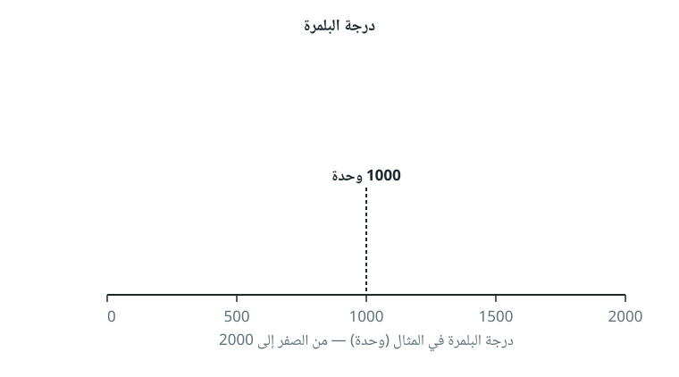

درجة البلمرة
Degree of polymerization
درجة البلمرة DP هي عدد الوحدات المونومرية في جزيء البوليمر الواحد. وتحدد مع الكتلة المولية للوحدة الكتلة المولية للبوليمر: M = DP·M₀، وهي ما يحدد الخصائص الميكانيكية.
البوليمر ليس جزيئاً واحداً بل خليط من سلاسل بأطوال مختلفة، ولهذا تُوصف درجة البلمرة بمتوسط. والمتوسط العددي DP_n يعتمد على عدد السلاسل، والمتوسط الوزني DP_w يعتمد على كتلتها، ونسبتهما هي معامل التشتت. مثال: بولي إيثيلين كتلته المولية المتوسطة العددية 28 000 g/mol وكتلة وحدته المونومرية 28.0 g/mol: DP_n = 28000/28.0 = 1000 وحدة.
كيف تعمل الظاهرة؟
في البلمرة الإضافية تنمو السلسلة بإضافة مونومر واحد في كل خطوة حتى تنتهي بالاندماج أو بنقل السلسلة. وفي البلمرة التكثيفية تتحد مجموعات وظيفية وتنفصل جزيئات صغيرة، فتنمو السلسلة تدريجياً. وطول السلسلة النهائي يحدده توازن بين معدل النمو ومعدل الإنهاء، ولهذا تنتج البلمرة التجارية خليطاً من الأطوال لا طولاً واحداً.
العلاقة بالأرقام
DP = M/M₀، وM_n = ΣN_i·M_i/ΣN_i، وM_w = ΣN_i·M_i²/ΣN_i·M_i. ومعامل التشتت Đ = M_w/M_n ≥ 1. مثال: خليط من 1 mol كتلته 10 000 و1 mol كتلته 100 000: M_n = 55000 وM_w = (10000²+100000²)/(10000+100000) = 91818، فيكون Đ = 1.67.
مفاهيم متقاربة
يُفرَّق بين DP وM: الأول عدد وحدات والثانية كتلة. ويُفرَّق بين DP_n وDP_w: الأول متوسط عددي والثاني وزني. ويُفرَّق بين درجة البلمرة ودرجة التكثف في البوليمرات المتشابكة، حيث الثانية عدد الروابط بين السلاسل. وأخيراً يُفرَّق بين درجة البلمرة النظرية والمقيسة، حيث الثانية تعتمد على توزيع الأطوال الفعلي.
حدود التطبيق
درجة البلمرة المتوسطة لا تصف توزيع الأطوال، وقد يكون لخليطين المتوسط نفسه وسلوك مختلف. ولا تصف البوليمرات المتفرعة أو المتشابكة حيث لا توجد سلسلة خطية واحدة. ولا تصف البوليمرات الكتلية حيث تتصل السلاسل في شبكة واحدة. وأخيراً لا تحدد الخصائص وحدها، بل يلزم معرفة التبلور والتفرع.

| الكمية | القيمة | المصدر |
|---|---|---|
| درجة البلمرة في المثال | 1000 وحدة | [1] |
المصادر
- 1 CODATA Value: Avogadro constant — NIST — CODATA 2022 recommended values (2024). physics.nist.gov/cgi-bin/cuu/Value?na · اطُّلع عليه 2026-11-22
- 2 CODATA Value: molar gas constant — NIST — CODATA 2022 recommended values (2024). physics.nist.gov/cgi-bin/cuu/Value?r · اطُّلع عليه 2026-11-22
استشهد بهذا المصطلح
الصيغتان مبنيتان من بيانات الصفحة نفسها: العنوان والتاريخ ورابط النسخة المنشورة.
درجة البلمرة — Degree of polymerization. (2026). ديوان المعرفة — انفراد. https://infiradev.com/diwan/terms/term-degree-of-polymerization.html
@misc{term-degree-of-polymerization2026,
title = {درجة البلمرة},
titleaddon = {Degree of polymerization},
howpublished = {{ديوان المعرفة — انفراد} — مرجع علمي عربي},
year = {2026},
url = {https://infiradev.com/diwan/terms/term-degree-of-polymerization.html},
urldate = {2026-11-26},
note = {مراجعة علمية: hermes (مراجعة معتمدة 2026-11-26)}
}
راجعه: hermes (مراجعة معتمدة 2026-11-26) · 2026-11-26 · آخر تحديث 2026-11-22